ワンハンド（片手）スタイルの提案 NEW
上級者編
ミッションを全部クリアした、レベルも最大まで上がってしまった、全ての金メダルを獲得したなど、全ての要素を体験してしまった人は是非、ワンハンドプレイをオススメします。
Wiiリモコンの特性を活かした、究極芸ともいえるプレイスタイルをマスターし、ひみリンを骨の髄まで味わって欲しいと思います。
以下に持ち方と具体的な操作方法、注意点などを挙げますので、参考にして下さい。
＜注意！＞必ずストラップを着用して下さい。
持ち方：リモコンを両手で横持ちします。
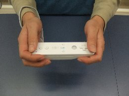
傾け方：リモコンを両手で横持ちします。
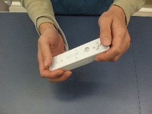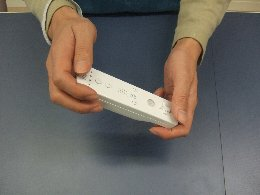
ここまでは、普通の操作方法だと思います。ここからリモコンを振るときだけ片手になるのが特徴です。
振り方１：左手を離し右手のリモコンを一瞬右に傾け、左に振り下ろします。
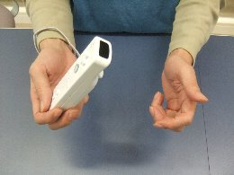
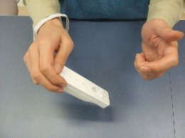
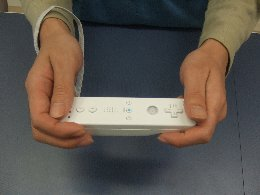
振り方２：振り方１と同じように片手で振ります。振り下ろしたリモコンを左手の掌に当てることでリモコンへ瞬間的に加速度を与えます。
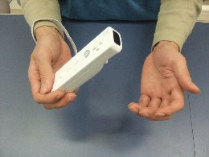
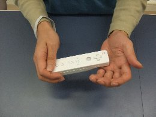
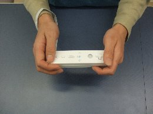
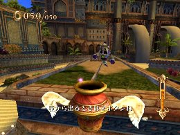
連続でリモコンを振るような場面では、振り方１を使用すると良いでしょう。
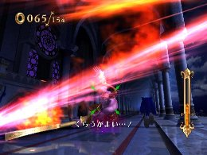
振り方２は、振り幅を小さくすることができるので、入力タイミングがシビアなときに使用すると良いでしょう。例えば左図のような場面では、右図のようにしてロックオンマークが赤くなる瞬間を待ちます。
ワンハンドスタイルをマスターして、クールなプレイスタイルを目指してみてはいかがでしょうか。
 RSS
RSS